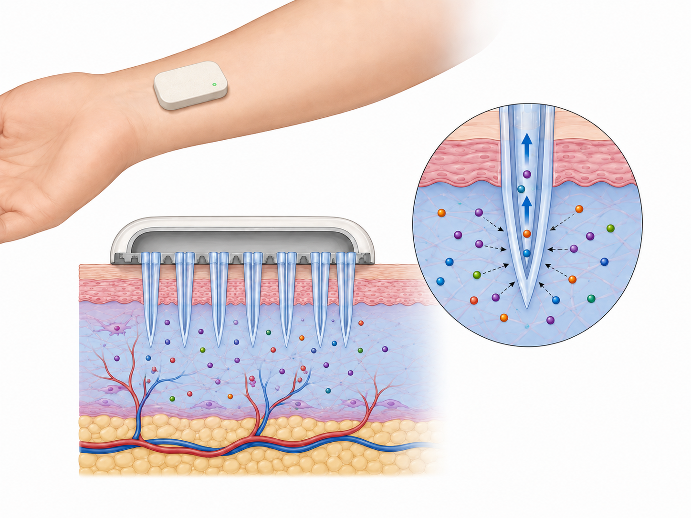

~/work/01 · wearable-biosensor
Wearable plasmonic biosensor
Reading inflammation from a patch of skin — no needle.
The platform, not the patch — the same core retargets to new biomarkers and disease models. A filed US/Canada patent is the moat; the platform is the prize, not any single device.
[ PhD ] [ McGill ] [ 2022–now ]